仿真对齐诊断
四任务均值：位置误差 11.21 → 4.45 → 3.41 cm；手朝向 21.22° → 13.77° → 6.71°。不是仿真闭环任务成功率。
不在运行时用 IK 覆盖 SONIC 的部分关节命令，而是离线修正参考，再沿冻结控制解码器优化 motion token。仿真中的实际 rollout 检查每轮修正是否真的改善执行；VLA 学的是经过筛选的状态—动作配对。
固定版本论文 · 论文给出的项目地址 · 本地 PDF 哈希。本页通读全文和内嵌附录；未把网页演示视频当作额外成功率证据。
这份页面按“读者的问题”组织，不机械翻译原文顺序；下面是回到原文章节的对照。覆盖固定 24 页版本正文及内嵌附录 A–D，保留全部图表的原始编号。参考文献按论证角色导读并链接原始书目，不把未独立精读的被引文献写成已经验证过的结论。
| 原文位置 | 这里讲什么 | 跳转 |
|---|---|---|
| Abstract、§1–2、§5，pp.1–3、10 | 动机、直接依赖、四个实验问题、贡献与局限、声明及参考文献角色。 | 研究背景 / 证据审计 |
| §3.1–3.2，pp.3–4；A.1 p.14 | 采集硬件、信号校准、训练部署接口和数据验证。 | 硬件 · 源数据验证 · Eq.1 |
| §3.3，pp.4–5；A.2，pp.14–15 | H 初始化、固定目标与高度配准、K、D、优化日程。 | 方法全解 · 高度配准 |
| A.3–A.4，pp.15–16 | 响应网络监督、结构、训练、输入梯度；历史候选与独立验收。 | 响应模型 · 验收 |
| §3.4 p.5；B.1–B.2 p.16 | 分割、补全、渲染、增强；π₀.₅ 后训练与控制变量。 | 视觉对齐 · VLA 训练 |
| §4.1–4.3，pp.5–8；B.3–B.4，pp.16–17 | 真机任务、示范预算、人力成本、三阶段评分与聚合。 | 评测总览 · Fig 4 · Fig 5 · Eq.7 |
| §4.4–4.5，pp.8–9；C.1–C.3，pp.17–18 | 动作/视觉消融、初始化、末端与全身质量、不同选优口径。 | Tables 1–7 · 协议分叉 |
| C.4–C.6，pp.18–20 | 迭代深度、离线耗时、响应消融、50 任务扩展集。 | Figs 6–7 · Tables 8–10 |
| D.1–D.3，pp.20–24 | Online IK 三种接线、60 次诊断、失败序列选择。 | IK 专节 · Tables 11–12 · Figs 8–10 |
公式直达：1 输入输出 · 2 编码参考 · 3 执行响应 · 4 追踪损失 · 5 骨盆坐标 · 6 局部优化 · 7 任务评分 · 8 历史选优 · 9 额外转向。每式都有用途、符号、单位/形状与明确标注的教学算例；未编号的高度配准、足底校正和响应混合也分别解释。
把“制数”和“执行控制器”看成互斥阶段，会误解整篇。SONIC 在离线制数中执行仿真运动，也在部署中控制真实机器人；VLA 训练发生在二者之间。同一个模块可以出现在不同阶段，但输入来自哪里、是否更新参数、运行目的并不相同。
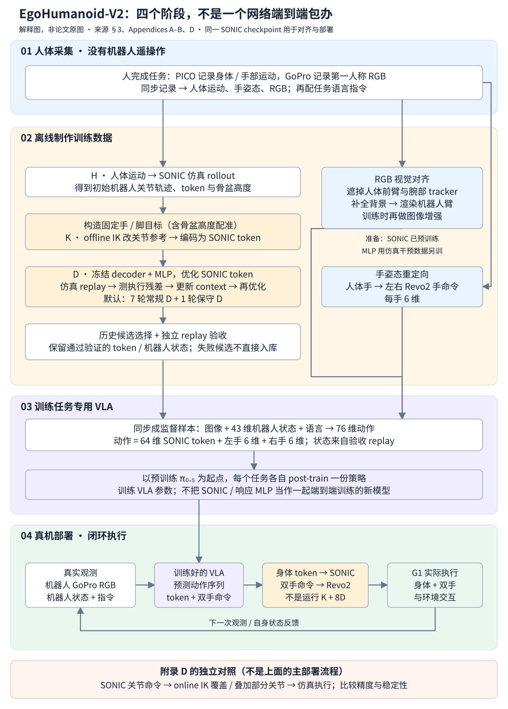
| 阶段 | 改变什么 | 不应误读为 |
|---|---|---|
| 响应模型训练 | MLP 网络参数 | 用目标任务真实机器人反复试错训练整个系统 |
| K / D 离线优化 | 参考关节轨迹 / token 数值 | 继续训练 SONIC 或每轮重训 MLP |
| VLA post-training | 任务策略参数 | 用 64 维 token 取代所有低层反馈 |
| 真机推理与控制 | 当前动作、机器人状态与下一次观测 | 论文报告了在线权重更新或测试时训练 |
Appendix D 的 online IK 是另一条诊断用支线：在 SONIC 关节输出后做 IK 组合，再检查仿真实际执行。它不属于上图主方法的部署阶段。详细区别见 offline/online IK 专节。具体高层推理频率、chunk 截取和全部低层软件调度字段，本文没有完整报告，图中不虚构周期数字。
2026-10-23 全文修订：全部 10 张图均保留逐图解读，并补齐公式、表格、附录与两张明确标注的教学流程图。下面的原图均从同一份 24 页 PDF 以 300–500 DPI 裁出；点击图片可打开原尺寸。必要解释直接显示，不依赖交互或折叠。
先把“人采数据”“离线制标签”“机器人执行”分开，再看每一块。图里同一条箭头可能表示训练样本流、监督信号或执行命令；不能把它们都理解成运行时的网络层连接。

| 图中区域 | 具体在做什么 | 该怎样理解箭头 |
|---|---|---|
| 左侧 Robot-free human demonstrations | 人完成关电脑、开冰箱、拉窗帘、脚关抽屉；同步记录 RGB、身体运动和手姿。Robot-free 指目标任务示范采集不需要机器人。 | RGB 走上方视觉分支；Human SMPL / 全身运动走下方动作分支，不是从一张 RGB 直接恢复全部控制命令。 |
| 上方 Visual alignment | 保留真实环境与物体画面，去掉人前臂与腕部 tracker，再合成机器人手臂；训练时做图像增强。 | 输出适配后的图像 Ĩ，作为 VLA 的观测。部署时不用再次对机器人画面做人臂擦除。 |
| 中间 Coarse stage | 先用 SONIC 得到初始机器人运动，再用离线 IK 修正参考几何，让手或足更接近固定人体目标。 | 这里输出的是更好的参考与编码后的 motion token，不是在真机执行时把 IK 结果覆盖到电机上。 |
| 中间 Fine stage 与 ×N | 根据仿真实际执行误差，利用局部 MLP 响应模型优化 token；每轮重新 rollout 检查，最后选出通过验证的候选。 | 循环属于离线数据处理。图中 Supervision 指对齐后的动作标签；同次 replay 还提供机器人 state。 |
| 右侧 RGB + 43-D state + Instruction → VLA | 以适配图像、机器人状态、任务指令为输入，对 π₀.₅ 做任务专用后训练；每个任务是一套独立策略。 | 训练时用对齐数据；部署时换成机器人实时 RGB 与自身状态。不是把人体 state 当作机器人 state。 |
| 右侧 Body / Hand control | VLA 输出 64 维 SONIC token 和两只手各 6 维命令；SONIC 负责身体，Revo2 driver 负责手。 | 这才是在线控制通道。MLP 响应模型与离线 IK 不在这条部署通道里。 |
下方四列在展示什么协调？关电脑是伸手与躯干配合；开冰箱是维持手接触与姿态/步伐配合；拉窗帘是持续抓握与拉动、身体位移配合；脚关抽屉是单脚交互与身体平衡配合。它们是任务能力示意，成功程度要看 Figure 4 的三阶段得分。
主干图的关键汇合点是一个训练样本：适配后的图像 ＋ replay 的机器人状态 ＋ 指令 → 对齐的身体 token 与手命令。视觉与动作分支必须对应同一时刻，不能各自“看起来合理”就拼在一起。
来源：Figure 1，§3.1–3.4，Eq.1–2；Appendix A.1、A.4、B.1–B.4。
“机器人应该看到什么”和“人刚才怎么动”是不同监督。GoPro 提供前者；PICO 系统提供身体与手部运动。右边的机器人则使用自己的相机和自身状态，不需要真人继续穿设备遥操作。

| 图中设备 / 通道 | 人体采集侧 | 离线处理 | 机器人部署侧 |
|---|---|---|---|
| 蓝线 · Egocentric RGB | 颈部 GoPro 拍人视角环境、物体与手臂画面。 | 原 Human RGB → 人臂遮罩与补全 → 机器人臂合成，得到 Aligned RGB；训练时增强。 | 头部 GoPro 拍真实机器人当前画面，标准预处理后输入 VLA。 |
| 橙线 · Hand Pose | PICO 系统采手姿；论文没有逐项公开头显与各 tracker 的融合算法。 | Retargeting 把人体手姿映射成机器手可执行命令。 | BrainCo Revo2 每手 6 维控制。6-D / hand 指手部命令维数，不是手掌的 6D 空间位姿。 |
| 青线 · Whole-body motion | PICO 4 Ultra ＋图示 5 个 PICO trackers 采全身运动。 | H 初始化、K 修参考、D 修执行，产出 64 维 motion token；同次 rollout 提供 robot state。 | SONIC 将 token 与低层自身反馈结合，生成 G1 身体控制；VLA 高层观测另含 43 维状态。 |
因为这里训练的是视觉条件策略：同一个伸手动作，面对不同位置的冰箱把手或电脑盖，应该产生不同控制。只有身体、手姿序列，没有对应场景图像，就缺了输入 oₜ 中的 Ĩₜ。反过来，只有 RGB 也缺少本文用来生成精确动作监督的身体与手部信号。这是根据 Eq.1 对数据接口的解释，不是额外硬件消融。
论文明确说两侧相机放在近似高度以缩小视角差，而不是要求安装部位名称一致。训练时仍会看到人身体运动造成的视角变化，部署时则是机器人头部运动；高度近似并不使每一帧的相机位姿、内参或运动轨迹完全相同，因此还要做外观适配与训练增强。Figure 3 解释具体处理。
Appendix A.1 写的是把 GoPro RGB、PICO 全身和手部信号配成 50 Hz 图像—轨迹数据，并检查时间戳一致性与帧数匹配。作者同时说明没有外部同步脉冲，因此这些检查衡量重复性，不是绝对同步误差的测量。不能把“50 Hz 配对”直接读成硬件级零时差，也不能推断原始相机的所有采集参数。
GoPro 解决“看见什么”，PICO 解决“人怎么动”，SONIC 解决“机器人怎么稳当地执行”。GoPro 不是额外的动作捕捉器，也不需要在部署时继续观察真人。
来源：Figure 2、§3.2 p.3、Eq.1 p.4、§3.4 p.5、Appendix A.1 p.14 与 B.1 p.16。
GMR 改善运动学参考，SONIC 将参考变成动态可执行的控制。但在操作物体时，几厘米的手端偏差可能决定能否插入门缝。这里要解决的是控制器执行后的残差，不只是参考姿态误差。
全身控制像一组相互补偿的动作：手向前伸时，腰和腿可能已经在为平衡配合。如果在线把手臂替换成另一套 IK 命令，剩下的 SONIC 输出不会自动知道这次替换。本论文在它测试的实现中观察到不稳定，因此选择在离线数据阶段做修正。
| 问题 | 回答 |
|---|---|
| 背景 | 已有 ego-to-robot 转移偏向解耦上肢/导航；目标是转移手、腰、腿协同技能。 |
| 直接依赖 | EgoHumanoid 采集接口、SONIC 全身 tracker/encoder、π₀.₅、离线 IK、机器人手臂渲染。 |
| 失败场景 | 追踪人体参考存在手/足末端偏差；在线覆盖关节虽可提高局部精度，却会扰乱协调。 |
| 核心押注 | 先改善参考，再学习“命令变化如何变成实际末端变化”的局部响应，用仿真闭环检验。 |
| 效果与代价 | 真机任务均分 21.25→47.08→51.67%；离线多轮优化很慢，且仍需选优与验收。 |
“Gradients pass through the fixed response model and control decoder, not the simulator.”
知道系统为什么需要修正后，要先确定修正的对象。29 维身体关节、43 维高层观测、64 维 token 处在不同接口层；把它们当成同一个 state 会使数据标签错位。
| 阶段 | 输入 / 输出 | 来源与约束 |
|---|---|---|
| 人体采集 | 颈部 GoPro RGB + PICO 身体/手部信号；50 Hz 配对 | 机器人与人体相机初始高度近似；无外部脉冲，时间一致性检查只能说明重复性，不能等同绝对同步误差。 |
| 运动初始化 H | 人体动作 → 仿真 SONIC rollout → b⁰∈Rᵀˣ²⁹ 与初始 token | 不是把 SMPL 关节角直接当 G1 电机命令。 |
| 高层观测 | oₜ=(Ĩₜ,qₜ,ℓ)，qₜ∈R⁴³ | 来自 controller rollout；本版未逐维列出 43-D schema，不能猜成 KODA 的 44-D。 |
| 高层动作 | aₜ=(zₜ,hᴸₜ,hᴿₜ)∈R⁷⁶ = 64+6+6 | SONIC 执行身体 token；两只 Revo2 分别接收 6 维手命令。 |
| 策略训练 | 每任务独立 π₀.₅；pi05_base，30k steps，batch 256 | 25/50/100/200 人类示范预算；相同 SONIC checkpoint 用于所有任务的对齐与部署。 |
| 响应模型预训练 | BONES-SEED：250 motions / 68 dates，345,080 frame–perturbation pairs | 验证 13 motions / 7 个不同日期，20,420 pairs；不是四个目标任务的机器人示范。 |
有了正确的输入输出，先用 K 修几何，再用 D 修控制响应。不要把“同一个 IK 多跑几轮”当成 dynamics-aware refinement；后者使用的是新 rollout 的执行误差。

动作分支决定“要教机器人做什么”，视觉分支决定“它看到这种动作时，画面是否像部署环境”。二者不能互相替代；下文的动作消融与视觉消融分别固定另一分支来比较。
来源：Figure 3、§3.3–3.4、Appendix A.4 与 B.1。响应模型的精确输入与梯度路径见下文。
足目标用踝与足关键点中点近似 sole center，再做固定地面校正和相同高度配准；它不是测得的真实接触点。关抽屉只优化足位置，不混入未使用的足朝向指标。
受约束的离线 IK 把初始参考拉向人体末端目标，同时限制偏离原运动与时间突变。手部任务只调整手臂与腰。校正后用机器人 motion encoder 得到 z⁰ = Eᵣ(bʳᵉᶠ)，重新播放，测出仍然存在的执行残差。
解释性算例：手距离目标还差 2 cm。若几何上命令前移 2 cm，但控制器实际只实现 60%，unit response 会只纠正 1.2 cm；局部响应模型会建议约 2/0.6=3.33 cm 的命令级修正。真实问题有耦合、时延和信赖域，不能用这个标量除法代替论文优化。
响应网络是冻结线性响应 + 两层宽 64 的 SiLU MLP residual。24 维干预加五个指数平滑历史成为 144 维，再条件化于 93 维 robot features 和 64 维 token。手任务只以 0.15 权重混合 learned response 与 unit response；足任务使用 learned position response，不能把 MLP 写成所有任务都独占的预测器。
默认一轮 K、七轮常规 D、一轮保守 D；每轮 D 的局部优化做 400 Adam steps。局部优化固定当前 rollout context，梯度穿过冻结网络；随后必须重新仿真，更新 context 和残差。手任务腿/腰/臂保姿权重为 20/20/0.1，足任务为 0.1/20/20，属于软惩罚，不是把非目标身体锁死。
训练数据候选经过误差、执行一致性与稳定性检查，再独立 replay；若后面变差，可能选回 H 或 H+K。验收限制包括 5 cm、15°、骨盆下降 10 cm、base tilt 25°。没有候选通过则拒收 episode。
上面的图给出了路线，但还没有解释“目标、参考、命令、执行”为什么不同。先认清四个对象，再按实际依赖顺序读 Eq.1、5、2、3、4、6。公式编号保持原论文编号，不因为教学顺序改变而重新编号。所有微型算例均为教学自造，不是论文实验。
| 对象 | 具体是什么 | 由谁改变 |
|---|---|---|
| 目标 y | 根据人体手掌/足部记录，经坐标与高度配准后的逐帧末端位置、朝向。 | 构造时确定；K/D 各轮共用，不随新的 rollout 移动靶心。 |
| 参考 bref | 希望机器人采用的身体关节轨迹，每帧 29 个数。 | K 的离线 IK 调整它；手任务只优化手臂与腰的参考关节。 |
| 命令 u | SONIC 在当前自身反馈下解码出的身体关节控制目标。 | D 改 token，间接改变命令；不是用 IK 在线覆盖这份输出。 |
| 执行 e | 仿真机器人真的运动后得到的手掌/足部位姿。 | 控制器与仿真动力学共同决定；必须重新 rollout 才能验证。 |
运动学（kinematics）回答“这些关节角按机器人肢体几何拼起来，手会在哪里”；动力学（dynamics）还涉及运动中的质量、惯性、支撑与控制响应。IK 解在几何上对，并不自动证明整段动作稳定。进一步，手掌跟踪误差小也不证明手指接触、摩擦或物体移动成功。本文对齐目标来自人体动作，不是精确物体接触模型。
采集后先做信号检查与 heading calibration（朝向标定），再进入 H。GoPro RGB、PICO 身体与手姿按 50 Hz 对齐，即相邻样本名义间隔 0.02 秒。检查时间戳一致性以及视频与轨迹帧数是否对应；否则图像里的手还在伸向物体，动作标签却可能已经在回收。
随后才检查生成机器人运动的末端误差、关节帧间变化、基座倾斜和骨盆位移。源数据配对检查和执行质量验收是前后两层，不可互相代替。作者说明没有外部同步脉冲，因此 PICO–GoPro 时间一致性测到的是重复性，不是经过外部时钟标定的绝对同步误差。
用途：定义训练与部署共用的数据接口，不是损失函数，也不是 SONIC 低层控制器的完整观测定义。
因此动作维数为 64+6+6=76。正文说策略预测动作序列，Eq.1 只写一个时刻的接口；本文未逐项给出 action chunk 长度、执行截取策略或完整归一化配置，不应从 50 Hz 数据配对反推 VLA 推理频率。
πθτ 表示任务 τ 的策略参数；四个任务各训练自己的 π₀.₅。SONIC checkpoint 则在四个任务和离线对齐/在线部署之间保持相同。没有目标任务机器人示范，不等于没有目标任务训练，更不等于基础模型从未见过机器人数据。
人体 SMPL 运动不是 G1 的电机角。本文让人体运动条件化 SONIC，在仿真中生成初始身体关节轨迹 b01:T 和 tokens，称为 H。bt∈ℝ29：t 是帧，1:T 是整段，上标 0 是初始版本。
SONIC 的人体运动接口提供了一条把人体运动变成控制的路径；EgoHumanoid-V2 正文没有展开该人体编码器的每一个预处理调用。应结合 SONIC 接口精读理解，而不能把 H 写成“SMPL 角度复制到 G1”。本文后续 K 则明确使用机器人编码器 Eᵣ。
直接从人体运动做重定向/IK 是可选初始化，不是被排除的路线。Table 2 比较 SONIC rollout、GMR 重定向、HuMI-style 全身 IK；三者之后都编码并由同一 SONIC replay，再做 K＋8D。选择 SONIC 的依据是末端精度与整体运动质量的折中，不是所有指标都胜出。即使 IK 参考更准确，经过实际控制器仍可能有执行误差，因此初始化与执行器是两层选择。
用途：把世界坐标中的三维点转成以骨盆为中心的局部表达，让人体与机器人末端可在统一规则下比较。它本身不求 IK，也不改变身体尺寸。
局部坐标架的 z 轴始终朝上，人弯腰时也不跟着倾斜。这不意味着人的躯干或机器人必须保持直立。每帧都使用自己的骨盆位置与 yaw，因此移除了整体平移和朝向，而不是把全局手部轨迹无条件搬到机器人世界坐标里。
yt,z 是给机器人使用的末端局部目标高度；pH,Lt,z 是人体末端相对骨盆的高度；hHt 和 hR,0t 分别是人和初始机器人骨盆的离地高度。目标的局部水平坐标与朝向保留，竖直分量加上人机骨盆高度差。
发生时间：必须先有 H，才知道初始机器人骨盆高度；随后构造 y，再进入 K/D。它不会直接改关节或骨盆。“固定”是跨优化轮次 k 固定，不是跨时间 t 不动：每帧可有不同目标和不同高度补偿，但第 k 轮不会用新的骨盆高度重定义第 t 帧目标。
作者取每只脚的踝点与脚部关键点中点，作为 sole-center proxy（脚底中心近似点）。先对每帧所有踝/足关键点的最低高度取整段时间中位数，得到关键点估计地面；再对每帧左右脚底近似点中的较低者取时间中位数，得到近似点估计地面。两者之差从每个近似点的竖直坐标中扣除，之后再做骨盆高度配准。
手任务对齐双手位置与朝向；Close Drawer 等 foot-only 任务对齐双足位置，不使用足朝向目标。这些脚底目标不是测得的真实接触点，也没有自动恢复物体表面和接触力。
目标侧来自 PICO 记录的身体/手部运动及上述配准。执行侧来自仿真 rollout 的机器人状态：仿真器知道基座姿态、关节实际角度和机器人几何，可以计算手掌/脚底点的位置，再转成与目标相容的局部表达。位置残差是“目标−执行”；手朝向残差用相对旋转向量，不能直接相减欧拉角或四元数。
用途：K 得到的是机器人关节参考，但最终接口是 SONIC token，因此要把参考转换回执行器理解的表示。
K 的运动学求解兼顾末端误差、接近初始参考和时间连续性。手任务只调整手臂与腰的参考关节。一轮 K 是一次处理整个参考轨迹的阶段，不是只做一步数值迭代。论文没有在该式给出完整 IK 目标及全部权重，不能把一个教学 IK 公式冒充其精确实现。
为什么默认只做一轮 K？Table 8 中 K¹→K⁸ 的位置误差只从 4.86 降到 4.77 cm，处理成本从 0.65 增到 2.55 s/frame。继续修几何收益有限，而 K 后追加 D 更能修执行残差。它是本文设置下的实证，不是“K 只能做一次”的定理。
用途：在当前 rollout 附近建立可微的局部执行响应预测，避免在每一步优化里都对整个物理仿真反向传播。
“局部线性化”是用 J 近似当前姿态附近的小变化，不是假设整个机器人世界都是线性。命令几何变化经过响应模型，才估计控制器和动力学之后的效果；大幅修改可能离开这个近似的适用范围。
rᵏ 是当前实际执行到固定目标还差多少：位置残差与手部相对旋转向量。Δê 是改 token 后预计能补多少。因此不是让 Δê 接近零，而是让它接近 rᵏ；两者差的平方和越小，说明预测修正越能消掉当前误差。L 是标量损失，‖·‖² 是各分量平方求和。实际优化还要考虑单位、任务权重、约束和正则，完整版本见 Eq.6。
梯度路径是 token → 冻结解码器 → 局部 Jacobian/历史变换 → 冻结响应网络 → loss。冻结网络权重不等于无法计算输入梯度。Adam 根据这条梯度更新 z；不是更新 SONIC、响应模型或 VLA 参数，也不穿过仿真器。
| 任务 | 腿 | 腰 | 手臂 |
|---|---|---|---|
| 手部交互 | 20 | 20 | 0.1 |
| 仅脚部交互 | 0.1 | 20 | 20 |
保守轮的存在不意味着论文在这里公开了全部缩步超参数。梯度通过代理模型而不是仿真器，近似误差用下一次 rollout 纠正；这仍不能保证每轮单调改善或一定不摔倒。
D 中网络冻结，说明它必须已经学好。A.3 用成对扰动仿真提供监督；不是在每个目标任务的 D 循环里一边训练网络、一边修改 token。
取同一机器人初始仿真状态和相同控制历史，分别执行基线 token 与扰动 token。输入是相同基线观测下两份解码命令经 Jacobian 得到的末端变化；监督标签是两次 rollout 在一个 policy step 之后实际末端位姿之差。扰动包含平滑随机变化及 token 优化方向，不是只做毫无结构的白噪声。
| 项目 | 论文给出的设置 | 理解边界 |
|---|---|---|
| 来源/划分 | BONES-SEED G1 运动；训练 250 motions / 68 capture dates / 345,080 frame–perturbation pairs；验证 13 motions / 7 dates / 20,420 pairs。 | date 分割降低同次采集泄漏风险；不是四个目标任务的机器人示范，也不是 345,080 条完整 episode。 |
| 干预输入 | 双掌、双足各位置 3＋旋转 3，共 24 维。 | 预测器有足旋转通道不等于脚任务使用了旋转目标。 |
| 因果历史 | 当前 24 维＋五种指数平滑版本，时间常数 0.02、0.1、0.5、2、5 秒，共 6×24=144 维。 | 不是六帧裸堆叠；不同平滑尺度表达短/长时间响应。 |
| 固定条件 | 93 维 robot-state features 与 64 维基线 token。 | 93 维不是 VLA 的 43 维；正文也没有逐项列出它的字段。把 144+93+64=301 视为列出的特征总量，不能据此断言所有网络分支的实际首层布局。 |
| 结构 | 冻结线性响应＋两层隐藏层、每层宽 64、SiLU 的 MLP residual；输出 24 维。 | 不是一个生成整段未来的世界模型。 |
| 训练 | AdamW，lr 3×10⁻⁵，weight decay 10⁻⁴，batch 512，梯度裁剪范数 5；最多 150 epochs，保留验证损失最低 checkpoint。 | 这些是响应模型训练参数，不是 D 的 token 优化超参数或 π₀.₅ 后训练配置。 |
如果不改命令，干预历史 x=0，就希望预测变化也是 0。相同条件下相减让残差项严格归零，避免网络把基线偏置误当成修正效果。比如 MLP(0,c)=0.4，MLP(x,c)=0.7，则残差变化是 0.3，不是直接使用 0.7。
输入/目标使用训练集统计量归一化；训练损失是归一化均方误差加权重为 1 的平方 residual 惩罚。这个 residual 指网络残差分量，不要与 D 当前的目标跟踪残差 rᵏ混淆。随机扰动占训练权重 75%，另外两类优化方向共享 25%；每类内部还平衡日期和源动作，权重不是简单的样本数量比例。
来源：Appendix A.3 p.15；响应来源 BONES-SEED。采样频率 50 Hz 对应 0.02 s；这个时间换算不推出高层 VLA 的部署推理延迟。
局部模型可能预测错，后期修正可能变得不稳定，因此先记录 H、H＋K 和各轮 D 候选，再做验收。限制包含位置误差 5 cm、适用时朝向误差 15°、骨盆高度下降 0.10 m、基座倾斜 25°，另检查执行一致性。不能把这些经验阈值称为形式化安全保证。
通过检查的候选先按最大归一化末端误差排序，再按平均归一化误差排序，按顺序独立 replay。可选回初始 H 或 H＋K；没有任何候选通过就拒收整段。最终接受的 replay 提供 state–action 对，不能把某一轮的状态与另一轮的动作随意拼接。
冰箱轨迹预处理、窗帘手命令及序列尾部还存在任务专用设置；论文只说明其存在，没有在 A.4 逐项给出全部实现参数。所有任务共用低层 checkpoint，不做目标任务 SONIC 微调；它不等于 π₀.₅ 也不后训练。
每个任务从相同 pi05_base 开始，bfloat16，30,000 步，global batch 256；AdamW、梯度裁剪 1.0、weight decay 10⁻¹⁰。学习率前 1,000 步 warmup 到 2.5×10⁻⁵，然后 cosine decay 到 2.5×10⁻⁶。固定骨干、动作接口和评测协议，通过改变示范预算或监督成分做比较。
Q1 使用 25/50/100/200 条人体示范；Q2 分别训练人类数据策略和机器人数据策略，机器人预算 6/12/25/50。动作与视觉消融均用 200 条人体示范/任务。默认监督是 H＋K＋Dₛ，视觉用机器人臂渲染＋增强；脚关抽屉不做臂渲染。
动作消融只改变 H、H＋K、完整监督的动作标签方案，保持视觉处理与训练设置；视觉消融保持对齐动作标签不变。部署输入机器人图像，只做标准预处理，不再做人臂分割、DiffuEraser 补全或八轮 D。
完整样本链：同步人体 RGB/身体/手姿 → 构造固定人体目标 → H/K/D/筛选得到同次机器人 replay 的状态和动作 → 根据对齐关节做视觉适配 → 与语言配对训练任务专用 VLA。这里优化 token 是离线制标签；训练 VLA 是拟合标签；部署 VLA 是根据新图像闭环预测，三件事不要混成一个在线优化器。
动作正确但画面仍是人手，部署时就有视觉分布差。本文处理的是手臂外观和视角鲁棒性；它没有完整重建物理场景，也没有把渲染视图等同实拍。
人和机器人都戴蓝色手套以简化对齐。SAM2 去除人体前臂和腕部 PICO tracker，DiffuEraser 补背景；由对齐关节渲染 G1 手臂，再调平移、旋转、统一尺度，与人体手腕/前臂位置对齐后合成。训练时做 random resized crop、小旋转和光度扰动，部署只用机器人相机标准预处理。
| 增强 / 渲染 | 关笔记本 | 开冰箱 | 拉窗帘 | 脚关抽屉 | 解释 |
|---|---|---|---|---|---|
| 无 / 无 | 31.67 | 16.67 | 35.00 | 50.00 | 原人类图像基线 |
| 无 / 有 | 51.67 | 23.33 | 41.67 | 未评 | 三臂任务均值 38.89 |
| 有 / 无 | 61.67 | 33.33 | 33.33 | 61.67 | 笔记本这项最高，不是组合总赢 |
| 有 / 有 | 53.33 | 38.33 | 53.33 | 未评 | 三臂任务均值 48.33，不能和四任务均值硬比 |
相同的“full pipeline”在不同实验中可能报告不同候选集与不同指标。先用 Eq.7 解释任务得分，再用 Eq.8、9 解释选优与运动质量，才能判断 51.67%、3.41 cm、3.97 cm 分别在说什么。
每任务每配置 20 次；各任务得分等权求均值。同一次尝试的三个阶段相互关联，不能当 60 次独立 Bernoulli。论文未给逐次阶段结果或完整成功计数，所以不能用 51.67% 直接计算完整成功率的 Wilson 区间；也未报告 error bars。“满阶段成功次数未报告”与“总试验次数未报告”是两种缺失，这里前者缺失、后者已知。
C.2 候选集合包括 H、H＋K 与所有 D 轮；脚关抽屉只按双足平均位置误差选优。这张表使用已记录的测量，不做独立 validation replay，也不做训练数据 acceptance filtering。因此它衡量历史中可获得的精度，而不是新 rollout 的保证值。
| 位置 | 候选集合 | 选择/测量规则 | 独立验收？ |
|---|---|---|---|
| A.4 制作 VLA 数据 | H、H＋K、各 D 历史候选 | 误差、执行一致性、稳定性检查；先最大归一化误差，后平均归一化误差排序。 | 按序独立 replay；无候选合格则拒收。 |
| C.2 / Table 1 离线误差 | H、H＋K、各 D 候选 | 手用 Eq.8；脚只按位置。 | 不做验收过滤或 validation replay。Table 1 真机 full 的训练数据另遵循 A.4。 |
| C.3 / Tables 2、6、7 初始化对照 | 只选 K 后的 D1–D8 | 手按两掌最大归一化位置/朝向误差，随后平均误差、轮次；脚类似但无朝向。 | 不应用训练数据 acceptance filter。 |
| C.4 / Figures 6–7、Table 8 | 指定深度的当前输出 | raw round output，不回退选较早候选。 | 处理耗时也不含后续 selection / validation。 |
| C.5 / Table 3 | 共享设置下八轮中的历史候选 | 位置/朝向必须来自同一选中候选。 | 不能把它与 raw Table 10 跨任务直接相减。 |
| C.6 / Tables 9–10 | 50 tasks / 112 trajectories | Table 9 阶段比较历史选优；Figure 7 和 Table 10 使用指定轮输出。 | 并非 50 任务真机或统一 VLA 的未见任务成功率。 |
因此 Table 1 的 3.41 cm 和 Table 8 的 3.97 cm 不矛盾：前者历史选优，后者固定 KD8 的原始输出。Table 9 的 3.83 cm / 10.85° 与 KD8 的 4.10 cm / 9.21° 也不能拿各自最小分量拼成一个结果；它们可能来自不同折中候选。
先对人体、机器人各自的 yaw 时间序列做 unwrap，避免 ±180° 跳变把连续转向变成数值大跳；再分别减去各自的初始角，得到相对起点的转向轨迹 ψʰ、ψʳ。
| 指标 | 定义与单位 | 不能误读成 |
|---|---|---|
| Pelvis drop | 相对初始骨盆高度的最大下降，cm。 | 平均骨盆高度或人体与机器人高度差。 |
| Tilt | 基座竖直轴与世界竖直轴夹角的轨迹最大值，degree。 | 手掌朝向误差或任务成功率。 |
| Joint step | 29 个身体关节中任一关节相邻 replay 帧角度变化的最大绝对值，degree。 | 走路步长、角速度或平均关节误差。 |
C.1 的末端误差先对帧与相关双端平均，再在任务内对轨迹平均，最后任务等权；C.3 的轨迹最大值指标则先在每条轨迹取最大，再做任务内/任务间平均。报告两位小数之前用未舍入值计算和排序。缺失测量不是 0，也不替换成更好的一轮。
K 与 D 的几何和执行收益最终要通过真实操作验证。先读 Figure 4–5 的示范数量与采集成本，再核对仿真、泛化和真机三张证据表，最后用 Figure 6–10 检查迭代收益与在线 IK 的失败边界。

读轴：四列分别是四个任务；每列横轴是用于后训练的人体示范条数，纵轴是三阶段平均 task score。每根柱对应独立训练的策略及 20 次真机尝试，不是一条策略逐步收集数据后的在线学习曲线。默认使用完整动作对齐与视觉处理，脚关抽屉不做手臂渲染。
| 任务 | 25 条 | 50 条 | 100 条 | 200 条 |
|---|---|---|---|---|
| 关笔记本 | 35.00 | 31.67 | 48.33 | 53.33 |
| 开冰箱 | 21.67 | 33.33 | 28.33 | 38.33 |
| 拉窗帘 | 40.00 | 38.33 | 50.00 | 53.33 |
| 脚关抽屉 | 56.67 | 36.67 | 53.33 | 61.67 |
支持什么：25 → 200 条时四任务均分从 38.33 提高到 51.67，支持增加人体示范有助于这四项技能迁移。没有支持什么：每个任务的曲线并不单调，尤其抽屉 25 → 50 条有明显下降；没有误差棒或重复训练方差，不能从几个柱子拟合稳定的 scaling law，也不能把 53.33% 读成“20 次中约 11 次完整成功”。
来源：Figure 4、§4.1–4.2；Appendix B.1–B.4。计分公式和各任务完整完成判据见下面真机表。

两个子图：(a) 关笔记本，(b) 拉窗帘。横轴不是采集耗时，也不是训练步数；每个点是独立策略，均评测 20 次。人体点复用了 Figure 4，不是另一批独立重复实验。200 条人体示范两任务均为 53.33 分；50 条机器人示范分别为 63.33 与 56.67 分，所以人体示范仍需要更多 episode 才接近机器人示范的效果。
底部成本条：关笔记本每条人体/机器人示范为 32.10/93.60 person-seconds，窗帘为 34.50/188.10。person-seconds 是所有操作者劳动时间之和，包含设置、标定、排障与重置；人体采集用一人，遥操作用两人，不等于视频时长，也不包含整个离线对齐计算开销。
来源：Figure 5、§4.3 pp.6–7；百分比复算使用文中人力统计，不把 GPU 处理时间混入采集人力。
| 数据 / split | 输入与控制 | 评估次数 / 指标 | H → H+K → H+K+Dₛ | 证据 / 边界 |
|---|---|---|---|---|
| 四任务，每任务固定随机 25 条训练轨迹 | 固定人体目标 + SONIC；50 Hz token replay；轨迹全时域，具体 simulator 版本未报告 | 位置：帧/双端平均再任务等权；朝向不含抽屉；不是 held-out task | 位置 11.21→4.45→3.41 cm；朝向 21.22→13.77→6.71° | Table 1 p.8；Appendix C.1–2 pp.17–18；无标准任务成功率 |
| 扩展：50 tasks / 112 trajectories，独立于四任务 cohort | 相同 K/D pipeline | task-equal endpoint error；是否完全未见于响应/基础预训练未证明 | 位置 17.03→5.22→3.83 cm；朝向 36.06→21.81→10.85° | Table 9 p.20；不是 50 个真机任务 |
| 初始化对照 | SONIC rollout / GMR / HuMI-style IK，再共享 K+8D | 同 25 条/任务；仅 D1–D8 选优 | 位置 3.41 / 3.42 / 3.82 cm；extra yaw 7.18 / 11.45 / 23.67° | Table 2,6,7；不是复现三套方法完整端到端 pipeline |
| 变化维度 | 已有证据 | 仍缺什么 |
|---|---|---|
| 起姿 / 对象变化 | 任务内执行变化，四个 task-specific policies | 未提供同协议独立 ID/OOD 分层结果，不计算下降/保留率 |
| 相机视角 / 外观 | rendering 与 augmentation 消融；相机初始高度近似 | 不是定量未见相机外参/光照 benchmark |
| 任务 / 本体 | 四个 G1 技能；无 target-task robot demos | 不是单一策略在未见任务/新机器人上的零样本评测 |
| 扩大任务范围 | 50 任务的仿真对齐诊断 | 不能当成真实操作 OOD 成功率 |
| 任务 | 全成功数 / 总试验数 | H / H+K / full 得分 % | 完成判据（第三阶段） | 区间 / 缺失 |
|---|---|---|---|---|
| 关笔记本 | 未报告 / 20 | 0 / 46.67 / 53.33 | 完全合上屏幕 | 不是二项成功率；无每次阶段结果，不能套 Wilson。完成时间、干预/安全停止计数未报告；无 error bars。 |
| 开冰箱 | 未报告 / 20 | 0 / 31.67 / 38.33 | 冰箱门打开 | |
| 拉窗帘 | 未报告 / 20 | 28.33 / 51.67 / 53.33 | 拉开一米 | |
| 脚关抽屉 | 未报告 / 20 | 56.67 / 58.33 / 61.67 | 抽屉完全关闭 | |
| 四任务等权均值 | 4×20 次/配置；不汇总成全成功计数 | 21.25 / 47.08 / 51.67 | 每个策略 200 人类示范 | 无目标任务机器人示范；仍有基础预训练与仿真适配 |
解释性算例：20 次都完成第一阶段、但第二阶段都失败，平均仍有 33.33% 得分，整项成功却是 0%。这正是为什么本页不把 51.67% 写成任务成功率。

| 曲线 | 横轴 k / m 的含义 | 它检验什么 |
|---|---|---|
| Dᵏ | 从 H 开始，只做 k 轮 dynamics-aware refinement。 | 不先修参考，单靠执行响应能否补救？ |
| Kᵐ | 连续做 m 轮运动学修正。 | 重复修几何是否就足够？ |
| KDᵏ | 先固定做一次 K，再做 k 轮 D；k=0 是 K 后结果。 | 良好参考之后，执行反馈还有多少收益？ |
| KᵐD⁸ | m 轮 K 后固定做八轮 D；横轴显示 m，不是 m+8。 | 增加 K 深度是否值得额外成本？ |
抓三组数：K¹ → K⁸ 的位置误差只从 4.86 → 4.77 cm；K¹D⁸ 达到 3.97 cm / 8.08°；只做 D⁸ 仍有 8.40 cm / 16.40°。对应解释是：K 先把参考拉到较合理的位置，D 再修真实执行残差，重复 K 的边际收益较小。
读图边界：位置是四任务等权平均，朝向只平均三个手部任务；每个深度使用该轮的 raw output，没有历史选优。所以这里的 3.97 cm 不能与 Table 1 的 selected 3.41 cm 当作同一统计口径。相同横坐标也不是相同耗时：Table 8 中 K¹D⁸ 为 1.49 s/frame，K⁸D⁸ 为 3.38 s/frame；这些是离线处理统计，不是部署推理延迟。
来源：Figure 6、§4.4、Appendix C.4 与 Table 8，pp.18–19。曲线无误差棒，不能把小差距解释成显著提升。

这里使用独立于前面四任务 cohort 的 50 tasks / 112 trajectories，按任务等权平均，不能把有更多轨迹的任务赋予更大权重。它回答的是“对齐机制是否局限于那四个任务”，不是“VLA 是否能在真机完成 50 个未见任务”。
K¹ → K⁸ 的位置误差为 5.22 → 5.01 cm；K¹D⁸ 为 4.10 cm / 9.21°；单独 D⁸ 为 14.16 cm / 21.91°。趋势支持先 K 后 D。D-only 的较高起点也提醒我们：局部响应修正不能自动替代运动学参考准备。
来源：Figure 7、Appendix C.6、Tables 9–10，pp.19–20。
以下数据按论文原编号完整转录；必要时拆开子表或转成长表以便阅读。原表保留供核对。没有把缺失值当零，也没有用加粗排名代替统计显著性。正文 1–4、附录 5–12 均在这里。
论文 p.8 · §4.4、Appendices B.2、C.1–C.2 · 原文定位
| 方案 | 笔记本 cm / ° | 冰箱 cm / ° | 窗帘 cm / ° | 抽屉 cm | 均值 cm / ° |
|---|---|---|---|---|---|
| H | 14.08 / 29.43 | 13.27 / 19.37 | 10.31 / 14.86 | 7.17 | 11.21 / 21.22 |
| H＋K | 4.22 / 13.84 | 4.24 / 14.72 | 3.13 / 12.74 | 6.22 | 4.45 / 13.77 |
| H＋K＋Dₛ | 3.04 / 9.50 | 2.76 / 5.77 | 2.02 / 4.85 | 5.80 | 3.41 / 6.71 |
| 监督 | 笔记本 | 冰箱 | 窗帘 | 抽屉 | 均值 |
|---|---|---|---|---|---|
| H | 0.00 | 0.00 | 28.33 | 56.67 | 21.25 |
| H＋K | 46.67 | 31.67 | 51.67 | 58.33 | 47.08 |
| H＋K＋Dₛ | 53.33 | 38.33 | 53.33 | 61.67 | 51.67 |
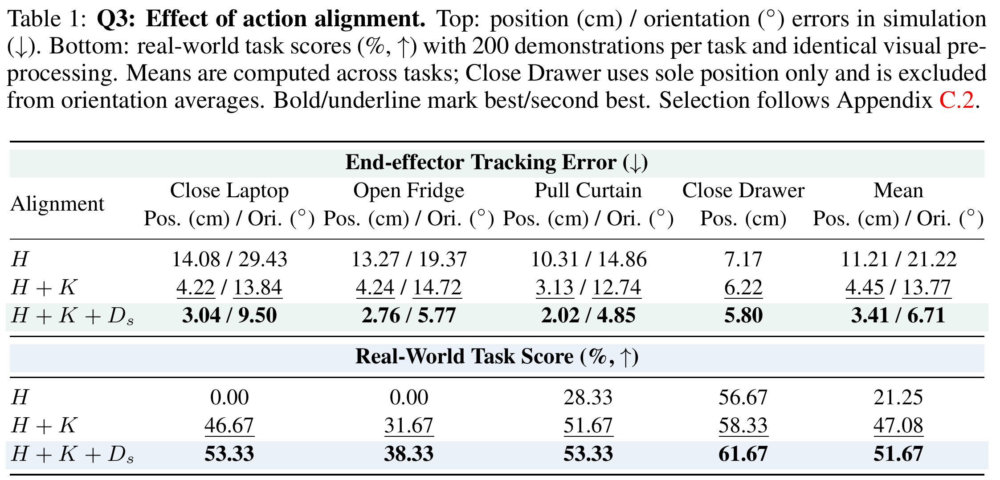
论文 p.8 · Table 2 caption、Appendix C.3；逐任务展开见 Tables 6–7 · 原文定位
| 初始化 | 位置 cm | 朝向 ° | 骨盆下降 cm | 倾角 ° | 关节帧间跳变 ° | 额外 yaw ° |
|---|---|---|---|---|---|---|
| SONIC rollout | 3.41 | 6.71 | 3.28 | 11.14 | 5.94 | 7.18 |
| GMR retargeting | 3.42 | 5.32 | 3.30 | 11.87 | 6.51 | 11.45 |
| HuMI-style whole-body IK | 3.82 | 6.35 | 5.25 | 12.77 | 7.75 | 23.67 |
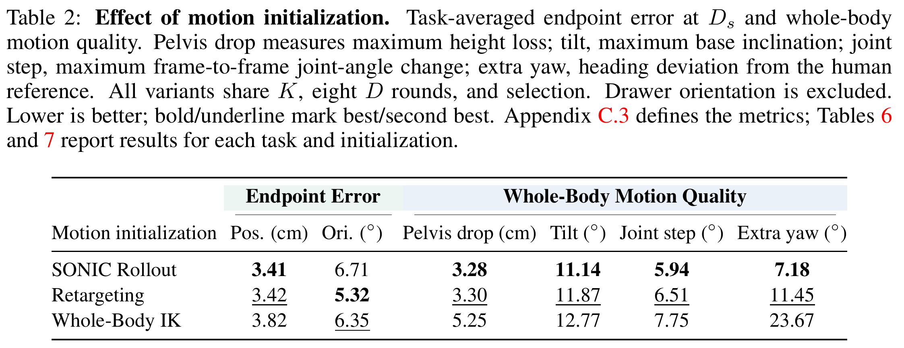
论文 p.9 · §4.4、Appendix C.5 · 原文定位
| 方案 | 笔记本 cm / ° | 冰箱 cm / ° | 窗帘 cm / ° | 抽屉 cm | 均值 cm / ° |
|---|---|---|---|---|---|
| Unit response | 3.18 / 9.74 | 2.89 / 5.88 | 2.19 / 5.06 | 9.18 | 4.36 / 6.89 |
| MLP response | 3.04 / 9.50 | 2.76 / 5.77 | 2.02 / 4.85 | 5.80 | 3.41 / 6.71 |
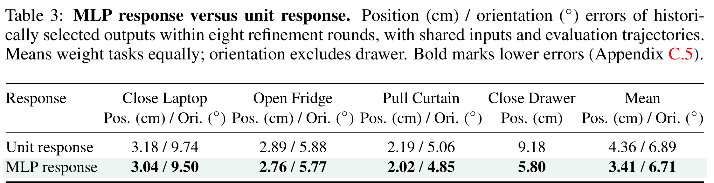
论文 p.9 · §4.5、Appendix B.2 · 原文定位
| 图像增强 | 机器人臂渲染 | 笔记本 | 冰箱 | 窗帘 | 抽屉 | 原表均值 |
|---|---|---|---|---|---|---|
| 否 | 否 | 31.67 | 16.67 | 35.00 | 50.00 | 33.33 |
| 否 | 是 | 51.67 | 23.33 | 41.67 | — | 38.89 |
| 是 | 否 | 61.67 | 33.33 | 33.33 | 61.67 | 47.50 |
| 是 | 是 | 53.33 | 38.33 | 53.33 | — | 48.33 |
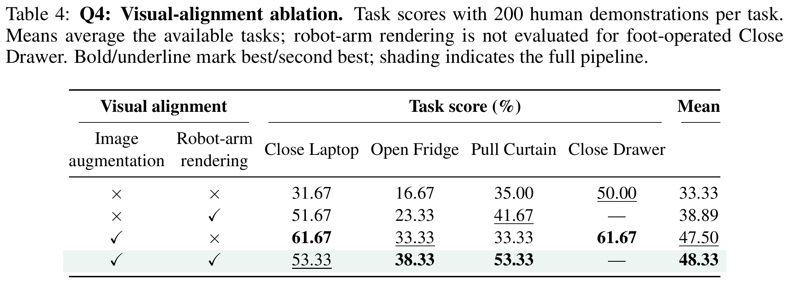
论文 p.17 · Appendix B.3–B.4、Eq.7 · 原文定位
| 任务 | 阶段 1 | 阶段 2 | 阶段 3 |
|---|---|---|---|
| 关电脑 | 右手到达盖板上方合适位置 | 完成有效向下按压 | 盖板完全闭合 |
| 开冰箱 | 左手接近门缝 | 钩入门缝 | 门被打开 |
| 拉窗帘 | 右手抓住窗帘 | 手部拉动 | 窗帘打开 1 m |
| 关抽屉 | 抬右脚，脚趾到最下层抽屉外表面前 | 向内推抽屉 | 完全关闭 |
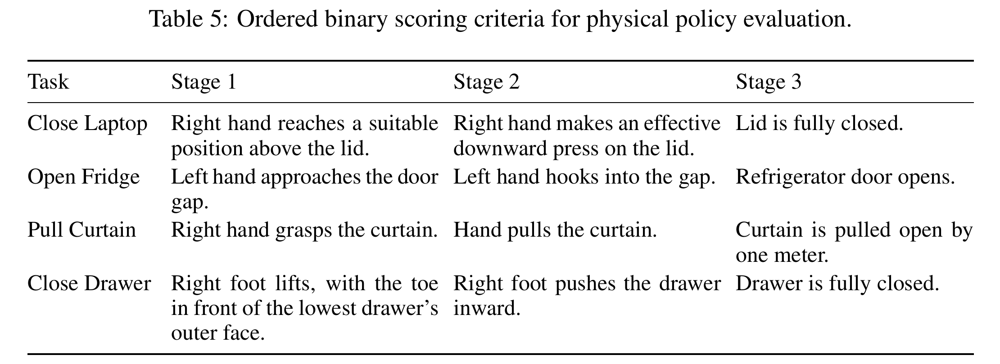
论文 p.18 · Appendix C.3；对应 Table 2 的精度部分 · 原文定位
| 任务 | 初始化 | 位置 cm | 朝向 ° |
|---|---|---|---|
| Close Laptop | SONIC rollout | 3.04 | 9.50 |
| Close Laptop | GMR retargeting | 2.67 | 6.33 |
| Close Laptop | HuMI-style whole-body IK | 2.75 | 6.19 |
| Open Fridge | SONIC rollout | 2.76 | 5.77 |
| Open Fridge | GMR retargeting | 3.15 | 5.74 |
| Open Fridge | HuMI-style whole-body IK | 3.68 | 7.25 |
| Pull Curtain | SONIC rollout | 2.02 | 4.85 |
| Pull Curtain | GMR retargeting | 2.05 | 3.88 |
| Pull Curtain | HuMI-style whole-body IK | 2.73 | 5.61 |
| Close Drawer | SONIC rollout | 5.80 | — |
| Close Drawer | GMR retargeting | 5.80 | — |
| Close Drawer | HuMI-style whole-body IK | 6.11 | — |
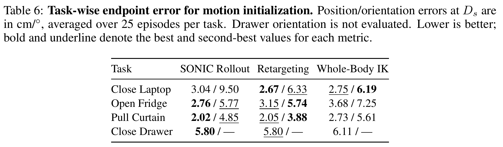
论文 p.18 · Appendix C.3、Eq.9；对应 Table 2 的运动质量部分 · 原文定位
| 任务 | 初始化 | 骨盆下降 cm | 倾角 ° | 关节跳变 ° | 额外 yaw ° |
|---|---|---|---|---|---|
| Close Laptop | SONIC rollout | 0.28 | 9.62 | 2.87 | 3.94 |
| Close Laptop | GMR retargeting | 0.50 | 10.86 | 3.95 | 3.67 |
| Close Laptop | HuMI-style whole-body IK | 2.06 | 11.32 | 6.07 | 22.60 |
| Open Fridge | SONIC rollout | 3.51 | 10.39 | 7.79 | 7.39 |
| Open Fridge | GMR retargeting | 3.35 | 11.62 | 8.28 | 13.96 |
| Open Fridge | HuMI-style whole-body IK | 8.08 | 13.04 | 8.42 | 16.70 |
| Pull Curtain | SONIC rollout | 1.94 | 5.32 | 5.31 | 6.55 |
| Pull Curtain | GMR retargeting | 2.48 | 6.16 | 5.26 | 5.66 |
| Pull Curtain | HuMI-style whole-body IK | 2.92 | 7.14 | 5.92 | 7.24 |
| Close Drawer | SONIC rollout | 7.40 | 19.22 | 7.78 | 10.84 |
| Close Drawer | GMR retargeting | 6.87 | 18.83 | 8.58 | 22.51 |
| Close Drawer | HuMI-style whole-body IK | 7.95 | 19.57 | 10.60 | 48.16 |
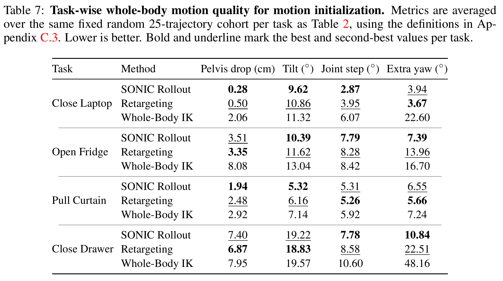
论文 p.19 · Appendix C.4；对应 Figure 6 · 原文定位
| 配置 | 时间 s/frame | 位置 cm | 朝向 ° |
|---|---|---|---|
| K¹ | 0.65 | 4.86 | 16.46 |
| K⁸ | 2.55 | 4.77 | 16.51 |
| D⁸ | 1.27 | 8.40 | 16.40 |
| D¹⁶ | 2.11 | 7.16 | 12.36 |
| K²D⁸ | 1.80 | 4.04 | 7.90 |
| K⁴D⁸ | 2.33 | 4.11 | 7.94 |
| K⁸D⁸ | 3.38 | 4.01 | 7.90 |
| K¹D⁸ | 1.49 | 3.97 | 8.08 |
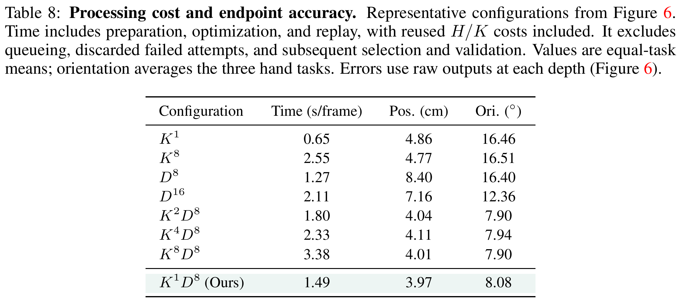
论文 p.20 · Appendix C.6 · 原文定位
| 阶段 | 位置 cm | 朝向 ° |
|---|---|---|
| H | 17.03 | 36.06 |
| H＋K | 5.22 | 21.81 |
| H＋K＋Dₛ | 3.83 | 10.85 |
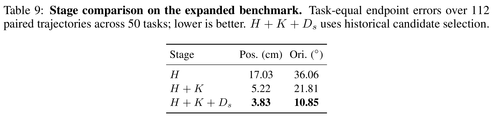
论文 p.20 · Appendix C.6；和 Table 9 的选择口径不同 · 原文定位
| 响应模型 | 位置 cm | 朝向 ° |
|---|---|---|
| Unit response | 4.25 | 9.39 |
| MLP response | 4.10 | 9.21 |
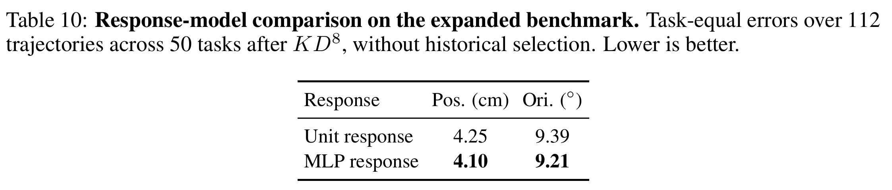
论文 p.21 · Appendix D.1（实验设计始于 p.20） · 原文定位
| 方案 | 三个手任务 | 脚关抽屉 |
|---|---|---|
| A | IK 控制手臂和腰；SONIC 控制腿 | IK 控制双腿；SONIC 控制其余关节 |
| B | A 的分工＋SONIC 平衡贡献 | A 的分工＋SONIC 平衡贡献 |
| C | IK 只控制手臂；SONIC 控制腰和腿 | IK 只控制右侧操作腿；SONIC 控制其余关节 |
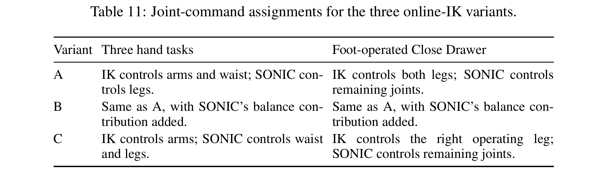
论文 p.21 · Appendix D.2–D.3 · 原文定位
| 方案 | 任务 | 位置 cm | 朝向 ° | 最大倾角 ° | 初始化摔倒 | fall events |
|---|---|---|---|---|---|---|
| A | Close Laptop | 4.45 | 10.43 | 16.97 | 0/5 | 0 |
| A | Open Fridge | 2.33 | 15.34 | 18.97 | 0/5 | 0 |
| A | Pull Curtain | 1.58 | 10.17 | 7.03 | 0/5 | 0 |
| A | Close Drawer | — | — | — | 5/5 | — |
| B | Close Laptop | 2.43 | 8.28 | 13.30 | 0/5 | 0 |
| B | Open Fridge | 1.55 | 14.45 | 17.26 | 0/5 | 0 |
| B | Pull Curtain | 1.50 | 10.07 | 6.61 | 0/5 | 0 |
| B | Close Drawer | — | — | — | 5/5 | — |
| C | Close Laptop | 26.50 | 40.93 | 82.75 | 0/5 | 9 |
| C | Open Fridge | 10.61 | 20.55 | 34.35 | 0/5 | 1 |
| C | Pull Curtain | 9.00 | 18.66 | 10.87 | 0/5 | 0 |
| C | Close Drawer | — | — | — | 5/5 | — |
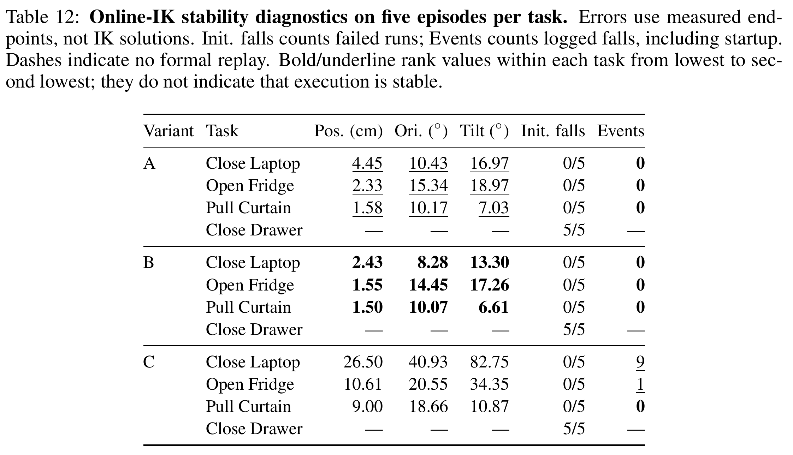
IK（inverse kinematics，逆运动学）是“知道手脚想在哪里，反过来求关节怎么摆”。Offline / online 描述它接在流程的哪个位置，不是两种完全不同的数学。本文的离线阶段也会运行 SONIC 和物理仿真；最终真机控制器同样会在线运行。被移出实时控制环的是本文这套 IK 修正与多轮 token 优化。
| 问题 | 主方法：offline IK（K） | 附录：online IK |
|---|---|---|
| 什么时候算？ | 为人体示范制作机器人训练标签时，在正式 VLA 训练之前。 | 仿真控制器正在逐帧执行时，计算并组合当前关节命令。 |
| 改什么？ | 机器人参考轨迹 bref；不是直接写电机。 | 发送给执行系统的部分关节目标；与 SONIC 的输出混合。 |
| 改完后经过谁？ | 参考 → SONIC 机器人编码器 → token → SONIC 控制解码器 → 仿真；D 再修执行残差。 | SONIC 命令 + IK 命令按关节分工/叠加 → 仿真执行。 |
| 有没有反馈？ | 有。每轮 D 后重新 rollout，测量误差，再优化；最终独立验收。 | 也有闭环控制与执行记录，但几何 IK 修正不因此自动拥有全身稳定性保证。 |
| 是否主方法部署链？ | 训练前的数据处理；部署时用训练好的 VLA 和同一 SONIC。 | 不是。Appendix D 是独立诊断实验，测试版本未用于策略训练。 |
“offline”不是“不联网”，也不是“只计算一次”。K 可以有多步数值求解，D 可以反复仿真，候选也可以失败后弃用。它们仍然是在制造数据，而不是让真实机器人执行任务的每个控制周期都重新跑完整 K＋8D。
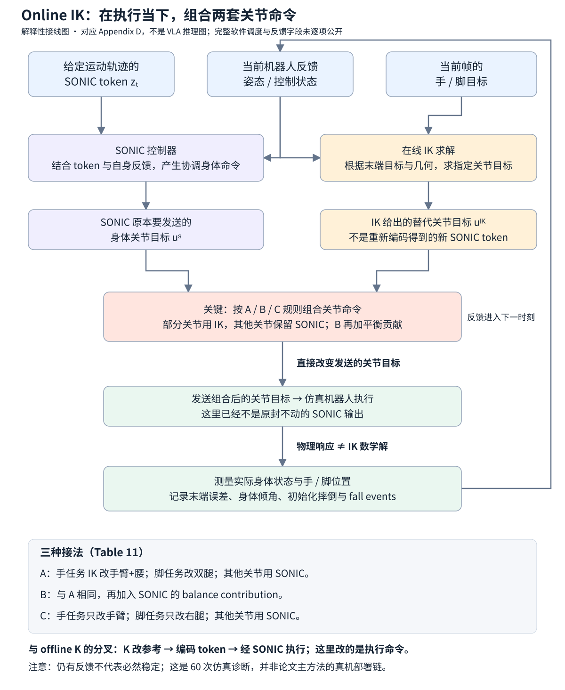
沿图走一次：当前帧有待跟踪运动 token 和手脚目标。SONIC 根据 token 与自身反馈产生整套身体命令；IK 按末端几何产生指定关节的替代目标。组合器决定各关节用谁的命令，仿真机器人执行之后产生新的状态。下一时刻继续这个过程。这张图的输出是混合后的关节命令，而不是一个“修正后的 SONIC token”。
一个自然替代方案是：既然 SONIC 全身动作比较协调、但手的位置有误差，那就让 SONIC 管平衡，再用 IK 把手补到目标。Appendix D 就是在检验这条捷径。若直接修输出既精确又稳定，就不必完全依赖复杂的离线参考修正与 token 优化来解决这个问题。这里仍需满足目标可得等前提；附录不是在证明在线 IK 不需要任何目标信息。
作者不是只测试一个随意配置，而是依次检查三个合理反驳：A：让 IK 改较大关节集合；B：在 A 上加回 SONIC 的平衡贡献；C：减少被 IK 覆盖的关节。三种方案 × 四任务 × 五条轨迹＝60 runs，独立于 Appendix C 的 cohort，不按精度筛选，也不为更好结果重试。
关键反例：B 的手任务误差只有 1.50–2.43 cm，手任务 fall events 还都是 0，但作者查看连续视频仍认为不稳定。三个方案的全部 15 个脚关抽屉 run 都在第一姿态准备时摔倒。其余 45 个手任务 run 达到最后一帧，也没有达到稳定跟踪。C 的 9 个 laptop fall events 不是“9/5 次失败”；同一个 run 可反复记事件。
正确结论：这些 SONIC＋online IK 接法没有给出可接受的训练轨迹，所以作者没有用它们训练 VLA；由此支持“要验证最终执行，不能只修 IK 解”的设计选择。不能据此推出：所有在线 IK 都失败、主方法绝不摔倒、或者在线方法已与离线方法在相同算力/筛选条件下公平决出全面优劣。两个 cohort 和验收协议本来就不同。
原文定位：§3.3、Appendix A.2、D.1–D.3；Tables 11–12 pp.20–21；Figures 8–10 pp.22–24。
| 方案 | 手任务关节组合 | 关键观察 |
|---|---|---|
| A | IK 手臂+腰，SONIC 腿 | 手任务日志 fall events 为 0，但视频判定不稳定；不能等同稳定成功。 |
| B | A + SONIC balance contribution | 手位置误差 1.50–2.43 cm 仍不稳定；局部精度不足以验收。 |
| C | IK 仅手臂，其余 SONIC | 笔记本 9 个、冰箱 1 个 fall events；event 可在同一 run 重复，不是失败次数。 |
| 足任务 | A/B 双腿 IK；C 右腿 IK | 15/15 抽屉 runs 在第一姿态准备时摔倒，未进入正式 replay。 |

控制分配：前三个手任务让 IK 控制手臂与腰，SONIC 保留腿；脚关抽屉则让 IK 控制双腿，SONIC 控制其余关节，没有加入 balance overlay。
逐行看：(a) 关电脑看伸手时膝、腰和身体倾角的配合；(b) 开冰箱看侧向/转身姿态与支撑的关系；(c) 拉窗帘看手臂动作时身体与支撑是否仍协调；(d) 抽屉行明确显示初始化准备时就倒地。前三行单看离散截图不能量化振荡频率，作者对连续视频的诊断才是“不稳定”的来源。
它排除的误读：Table 12 中方案 A 的手任务记录了 0 次 fall event，并不等于稳定完成；末端到位、没有触发摔倒日志、整段稳定，是三个不同判据。相邻截图的脚步和姿态变化也不能脱离参考轨迹单独判成失败。
来源：Figure 8、Appendix D.1–D.3、Tables 11–12。每任务五条中按最大 base tilt 选一个片段，四行不是四次随机试验；缺少物体也不能读出接触任务成功。

逐行看：(a)–(c) 仍然对应关电脑、开冰箱、拉窗帘，观察全身姿态而不只盯住手。截图中机器人没有全都倒地，不能据此宣称方案成功；(d) 抽屉序列仍在正式轨迹 replay 前倒地。
最有意义的对照是表里的精度：三个手任务的位置误差为 2.43、1.55、1.50 cm，比 A 更低，日志也没有手任务 fall event，但作者仍判定连续运动不稳定。它直接说明“末端误差更小”不足以证明混合控制可用。
来源：Figure 9、Appendix D 与 Table 12。A/B 的代表片段各自独立按 peak tilt 选取，不能当成同一 episode、同一时刻的严格视觉 A/B 对比。

逐行看：(a) 关电脑和 (b) 开冰箱的代表片段出现明显倒地；(c) 拉窗帘没有展示倒地，但作者仍报告不稳定；(d) 抽屉依旧在第一姿态准备时失败。与 A/B 相比，“保留更多 SONIC 关节输出”并没有单调改善稳定性。
Table 12 记录 C 的关电脑 9 个 fall events、开冰箱 1 个；每任务只有五个 run，所以 9 不是 9/5 次失败率，同一 run 可以多次记 fall event。三个方案共 15 个抽屉 run 均在初始化摔倒，未进入正式 replay，因此位置/朝向误差是缺失值，不是 0。
Figure 8–10 为整篇的离线设计提供了失败动机：修参考、优化 token 后重新验收整段执行，而不是凭 IK 解精确就认为全身控制成立。证据范围仍限于本文测试的三种 SONIC＋在线 IK 实现。
来源：Figure 10、Appendix D.1–D.3、Table 12，pp.20–24。固定裁剪保留相对运动；片段没有标出绝对时间，不能估计实时频率或跌倒耗时。
人体采集的平均人力为 33.30 person-seconds/episode，机器人遥操作为 140.85，减少 76.36%；这一数值含采集、设置、标定、排障和重置，但不等于全部数据处理成本。200 条人类示范也不等于 50 条机器人示范的信息量。
Table 8 报告 K¹D⁸ 为 1.49 s/frame，K⁸D⁸ 为 3.38 s/frame；这些是跨主机、每主机并发三条 episode 的处理运行统计，排除排队、失败尝试、之后的选择和验证。不能读成实时推理延迟或单台机器端到端吞吐。
干预位置不同。前者在闭环里临时改控制器输出；后者先改 canonical 参考，再为目标 controller 重新生成并验证 state/action。两者都要求看最终 rollout，而不是只看 IK 解。
方法与结果已经展开，现在回到作者为什么提出它。这里区分“本文正式声称”“合理机制解释”和“没有被实验验证”的部分，避免把所有模块都算成新算法。
人的示范能在没有机器人遥操作的情况下记录场景与协调运动。但不同身体尺寸、动作表示和摄像机外观让示范不能直接监督机器人。以往解耦的 loco-manipulation 往往把手臂 IK 与底盘/腿部控制分开；统一全身 tracker 则联合使用反馈输出关节命令，直接覆盖其中一部分可能破坏协调。
本文选择固定 SONIC，在离线数据构造环节补精度：K 修参考，D 用执行反馈修 token，视觉分支减小人体/机器人外观差，最后训练任务专用 π₀.₅。贡献是这个面向全身协调技能转移的系统与验证，而不是声称发明了 IK、π₀.₅、SONIC、SAM2 或 DiffuEraser。摘要的“first”是作者的优先权主张，本页不把它当作独立穷尽先前工作的证明。
| 路线与文中例子 | 提供什么 | 与本篇的分工 |
|---|---|---|
| 人体数据源/表征：Ego4D、Ego-Exo4D；R3M、VIP、预测交互表征 | 场景多样性、视觉表示或预训练信号。 | 有视觉知识不等于已经有机器人全身动作监督。 |
| 无动作标签视频、latent action、WAM：LAPA、task-centric latent actions、WholeBodyVLA、World Action Models | 从视频中提取动作先验或联合世界/动作建模。 | 本文利用同步采集到的身体/手姿，显式构造控制器一致的动作标签；不是提出新 WAM 骨干。 |
| UMI 与 VR 采集：UMI、FastUMI、DexUMI、RDT2、MotionTrans、EgoDex | 让机器人外采集的手部动作能够成为监督。 | 还需处理全身协调、步伐与躯干运动，不能只转换双臂末端。 |
| 可穿戴与领域适配：EgoMimic、EgoBridge、DexWild、EgoScale、Humanoid policy ~ human policy | 人机数据协同、手部数据规模与视觉领域差。 | 本文把视觉适配与固定全身执行器下的动作精修结合。 |
| 模仿/遥操作/全身跟踪：HumanPlus、ExBody2、OmniH2O、TWIST、GMT、SONIC、Agility Meets Stability、GLoRI | 将运动参考变成全身协调控制。 | 跟踪能力是本篇依赖，不代表末端接触精度已经充分。 |
| 解耦/移动操作：HOMIE、AMO、EgoHumanoid、HumanoidExo、HoMMI、Ψ₀、ZeroWBC | 移动与操作技能、数据采集或基础策略。 | 本文聚焦协调全身技能；不是把不同系统的报告分数当成同协议排行榜。 |
| 参考重定向/残差：GMR、OmniRetarget、SPIDER、ASAP、ResMimic | 改善参考几何、交互关系、动态可行性或执行偏差。 | 本文不在目标任务上微调 tracker，而在离线优化参考及输入 token。 |
| 情境全身模仿与接口：Visual imitation enables contextual humanoid control、HuMI、BifrostUMI | 场景条件或 robot-free whole-body 示范接口。 | Table 2 只借用初始化路线，不能宣称复现并击败它们的完整 pipeline。 |
| 外观适配：Mirage、RoVi-Aug；SAM2、DiffuEraser | 跨本体图像替换、视角增强、分割和补全。 | 这些是视觉分支的直接依赖；补全结果不是被遮挡背景的测量真值。 |
来源：§1–2 pp.2–3、References pp.10–13。此表解释这些引用在本篇论证中的位置，不声称逐篇独立复现实验；完整作者、年份与出版信息请对照 原文参考文献。
| 检查点 | 已有证据 | 尚不能推出 |
|---|---|---|
| 初始化公平性 | 固定目标、控制器 checkpoint、reset 状态、窗口、K/D 预算。 | 不是 GMR/HuMI 原生端到端复现；初始化比较还含后续 refinement。 |
| 对齐精度 | 仿真末端相对人体配准目标的 cm/degree 误差。 | 人体记录是无噪声接触真值；零误差保证真机抓取。 |
| 稳定性 | 有姿态/高度阈值、独立 replay 与在线 IK 失败分析。 | 形式化安全保证、任意载荷/摩擦/接触都稳。 |
| 统计强度 | 每真机配置 20 次；固定轨迹 cohort；给出逐任务数据。 | 多种子显著性或小差距可靠排序；未报告 error bars。 |
| 筛选代价 | 无候选通过则拒收。 | 总拒收率、最终有效数据产出率和全部失败处理成本；这些未完整报告。 |
| 泛化 | 四任务内起姿/对象变化与更广任务集合上的仿真对齐。 | 单一策略对未见任务、本体、动力学、语言组合的统一 OOD 成功率。 |
| 实现完整性 | 论文给关键接口和 A/B/C/D 细节。 | 43-D/93-D 逐维定义、全部 IK/信赖域系数、保守轮全部超参数、chunk/在线延迟都已公开。 |
A.4 的训练验收和 C.2 的离线历史选优不是冲突，但若只读正文容易误认为同一个流程。Table 4 的 mean 使用可用任务，带 rendering 的行只有三个手任务，另外两行含脚任务；不能直接拿整列 mean 当严格同集合比较。本文把这些差异显式展开，未替作者把不同数值合并。
C.4 原文将部分工作站写为 RTX 4090（48 GB VRAM），另一台为 RTX 5090 Laptop（24 GB），每主机并发三条 episode，主机混合统计。这里忠实记录其报告，不替作者改成另一个显存数字，也不以此推导消费卡单机速度；型号/配置是否为改装或记录问题需进一步核实。
能支持：在本文四个 G1 任务、固定低层控制器与给定训练设置下，对齐的人体示范可支持直接真机执行；K、D 与视觉处理提供可区分收益，人体采集的单条人力成本更低。
不能支持：任意人体视频即插即用、免目标任务训练、无机器人先验、完整成功率 51.67%、50 个任务真机零样本成功，或所有在线 IK 方案都不可行。
作者提出后续方向是更强稳定性约束与更快优化，因为 IK 和多次 rollout 限制吞吐，结果仍可能不稳定。p.10 的 AI Use Statement 说明生成式 AI 用于文献、方法/实验反馈、写作、图与软件等辅助工作，作者审核并对最终内容负责；这不是额外方法贡献或实验验证。Reproducibility Statement 指向 §3–4 与 A–D；它是复现说明，不自动证明所有实现与数据已完整公开。
完整覆盖固定版本 arXiv:2609.37181v1 的摘要、§1–5、声明、参考文献角色、A.1–A.4、B.1–B.4、C.1–C.6、D.1–D.3。外部补充视频未独立逐帧审核；本文视频观察均明确归于作者报告。新版本或后续代码补充不被默认为本版本事实。
EgoHumanoid-V2 的重心是固定 SONIC 下的动作和外观对齐；KODA 进一步问：换控制器时，哪些数据能保留、哪些必须重标？这会决定 WAM 的动作空间是否绑定某个 checkpoint，以及图像、状态和动作是否描述同一次执行。